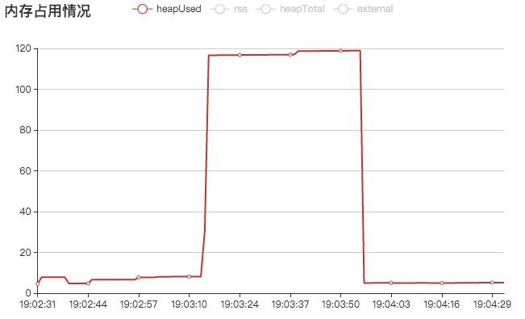

给个人博客添加了一个功能：自动导出所有文档到文件夹，然后提交到github上。
我用process.memoryUsage()来查看内存占用的情况。
第一次导出全部时看了heapUsed占用160MB左右，倒也没在意，以为等自动垃圾回收之后会降下来，没想到第二天晚上看的时候居然还是稳定在这个位置，这就大概率是内存泄漏了。
起先怀疑是我写的mvc框架内存泄漏，于是我把主控制器代码改成最基本的输出，然后用ab命令访问100次。
IndexController.cjs
<?js
class IndexController extends App.Controller{
async indexAction() {
echo('xxx')
}
}
module.exports=IndexControllerab -c 50 -n 100 http://127.0.0.1:19191/
看上去结果挺正常的，那么内存泄漏跟框架本身是没关系了。接下来排查对应的控制器代码。
Marked2gaController.cjs
<?js
class Marked2GaController extends App.Controller{
async init() {
const gm=await App.Loader.LoadService('Ga')
if(!gm.is_local_logined_url() && !await gm.logined()) {
this.redirect({
controller: 'Error',
action: 'noaccess'
})
}
}
async githubioAction() {
const serviceMarked2=await App.Loader.LoadService('marked2')
const detail=await serviceMarked2.getDetail(query.id)
const serviceGithubio=await App.Loader.LoadService('githubio')
const marked2str=await serviceGithubio.getstrbydetail(detail, query.debug==='yes')
await this.displayView({
dd: detail,
marked2str,
CY_APPID,
CY_CONF,
DISPLAY_NAME: MARKED2_DISPLAY_NAME,
DESCRIPTION: MARKED2_DESCRIPTION,
})
}
// 其他action代码略
}
module.exports=Marked2GaController
这里init是每次控制器被初始化时都会执行的代码钩子，githubioAction是生成导出代码的控制器。
相关的方法就这两个，于是我首先把githubioAction的代码全部注释掉改成一个空的action，然后用ab命令同样模式访问100次，测试结果图和上面的差不多，所以问题基本确定是在 githubioAction 里。
这个方法功能不多，涉及运算的也就serviceMarked2.getDetail和serviceGithubio.getstrbydetail，第一个方法在其他地方都用到过，也验证过没有内存泄漏问题，那么问题就是在后者serviceGithubio.getstrbydetail了。
async getstrbydetail(detail, is_debug) {
let str=detail.content
const ms=await App.Loader.LoadService('marked2')
const related=(await ms.related(detail.tags)).filter(a=>a.id!==detail.id)
const ls=await ms.ls(1)
const rand=(_=>{
let ret={}
for(let i=0; i<20; i++) ret[ls.length*Math.random()|0]=1
return Object.keys(ret).map(i=>{
if(ls[i].id===detail.id) return
return ls[i]
}).filter(a=>a)
})()
const id2url=id=>is_debug?`?id=${id}&debug=yes`:`${id}.html`
const RELA=`\n\n> ### 相关文档\n`
str+=RELA+(related.length?related.map(({id, title})=>` 1. [${title}](${id2url(id)})`).join('\n\n'):`暂无`)
const RAND=`\n\n> ### 随便看看\n`
str+=RAND+(rand.length?rand.map(({id, title})=>` 1. [${title}](${id2url(id)})`).join('\n\n'):`暂无`)
const marked=require('marked')
marked.setOptions({
sanitize: true,
})
marked.use({
renderer : {
codespan: (str, b)=>{
const [,color,text]=str.match(/(^#{0,1}[a-z\d]+)\s*;\s*(.*$)|$/)
if(color) return `<font color="${color}">${text}</font>`
return false
},
},
})
return await marked(str)
}看上去这里涉及运算的方法有：
- ms.related 获取相关文档列表的方法
- ms.ls 获取文档列表的方法
- marked marked解析器
逐个排查，先把这三个方法全部干掉：
async getstrbydetail(detail, is_debug) {
let str=detail.content
const ms=await App.Loader.LoadService('marked2')
const related=[] // (await ms.related(detail.tags)).filter(a=>a.id!==detail.id)
const ls=[] // await ms.ls(1)
const rand=(_=>{
let ret={}
for(let i=0; i<20; i++) ret[ls.length*Math.random()|0]=1
return Object.keys(ret).map(i=>{
if(ls[i].id===detail.id) return
return ls[i]
}).filter(a=>a)
})()
const id2url=id=>is_debug?`?id=${id}&debug=yes`:`${id}.html`
const RELA=`\n\n> ### 相关文档\n`
str+=RELA+(related.length?related.map(({id, title})=>` 1. [${title}](${id2url(id)})`).join('\n\n'):`暂无`)
const RAND=`\n\n> ### 随便看看\n`
str+=RAND+(rand.length?rand.map(({id, title})=>` 1. [${title}](${id2url(id)})`).join('\n\n'):`暂无`)
return str
/*
const marked=require('marked')
marked.setOptions({
sanitize: true,
})
marked.use({
renderer : {
codespan: (str, b)=>{
const [,color,text]=str.match(/(^#{0,1}[a-z\d]+)\s*;\s*(.*$)|$/)
if(color) return `<font color="${color}">${text}</font>`
return false
},
},
})
return await marked(str)
*/
}然后ab命令测，果然内存情况正常了。
然后依次还原这三个方法，最后定位问题出在marked上，我猜测原因是每次初始化marked都会存在内存泄漏，那么解决办法就是让这玩意只初始化一次，即用单例模式来使用它。
修改之后如下
// 把marked方法变成单例模式使用
async markedstr(str) {
// marked可能存在内存泄漏，使用单例模式相对安全
const marked=await Singleton('marked', async _=>{
const marked=require('marked')
marked.setOptions({
sanitize: true,
})
marked.use({
renderer : {
codespan: (str, b)=>{
const [,color,text]=str.match(/(^#{0,1}[a-z\d]+)\s*;\s*(.*$)|$/)
if(color) return `<font color="${color}">${text}</font>`
return false
},
},
})
return marked
})
return marked(str)
}
// 把原先写marked(str)的写法改成这样
return await markedstr(str)
这次再用ab命令测试，问题已经解决了。
有感而发，就是因为我完全贯彻了mvc架构的分层理念，这次排查问题才能顺藤摸瓜非常轻松地解决了。实际上这些被封装方法的背后还有数据库查询，界面输出等功能逻辑，如果全部写在一起的混乱代码，靠这种排除法的方式来查就会相当麻烦。
网上搜了一些nodejs内存泄漏的排查方式，最靠谱的是借助代码侵入方法导出内存使用快照，然后用chrome开发者工具来定位内存占用时间最长的代码。以后有机会我也试试看吧，问题复杂的时候不失为一种快捷的方法。
相关文档
暂无
随便看看